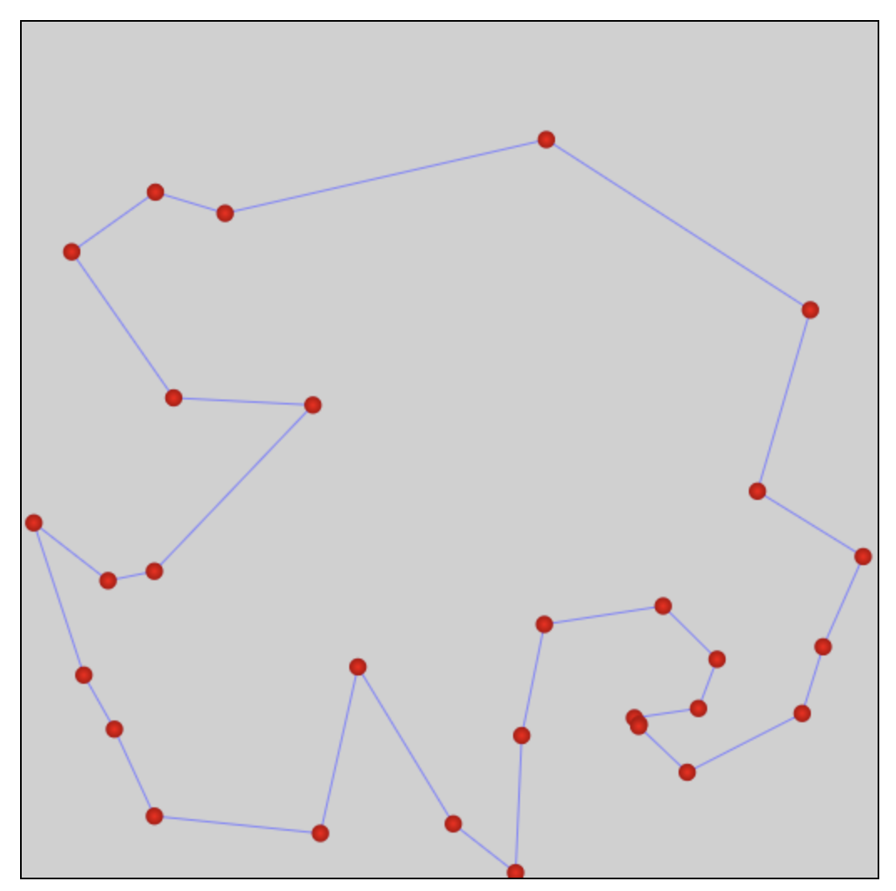
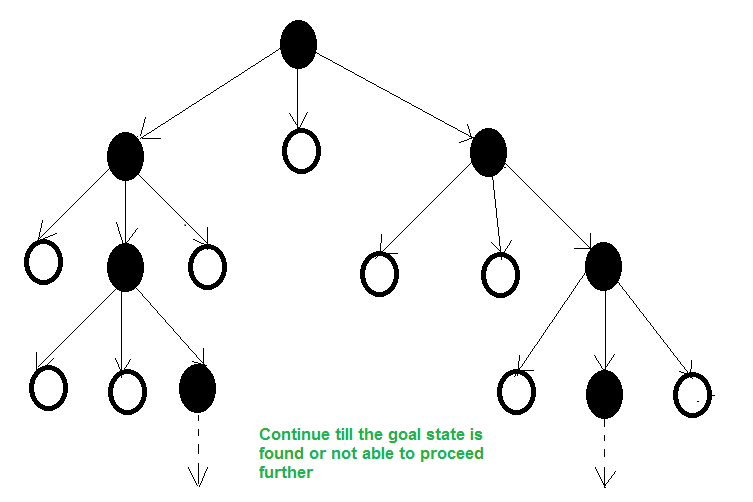
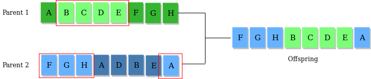
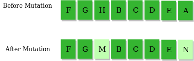

Verify whether a state is a local / global optimum
Describe strategies for escaping local optima
Trace greedy descent, random restarts, simulated annealing, genetic algorithms
Compare and contrast local-search algorithms
Why local search?
Classical search algorithms…
… explore the space systematically. What if the space is too large, or infinite?
… remember a path from the initial state. What if we only care about the final state (e.g. CSP solution)?
Solution: local search.
Properties of local search
Does not explore the search space systematically.
Finds reasonably good states quickly on average.
Not guaranteed to find a solution — cannot prove none exists.
Does not remember a path to the current state.
Requires very little memory.
Can solve pure optimization problems (no goal test).
What is local search?
Start with a complete assignment to all variables. Take iterative steps to improve it.
State
A complete assignment to all variables.
Neighbour relation
Which states can we step to next?
Cost function
How good is each state? Lower is better.
4-queens as local search
State: a queen in every column (any row); e.g. (3, 2, 1, 1).
Initial state: a random state.
Goal: no pair of queens attacking.
Neighbours:(A) move one queen within its column. (B) swap rows of two queens.
Cost: number of attacking pairs.
\(x_0\)\(x_1\)\(x_2\)\(x_3\)
0123
Q
Q
Q
Q
(3, 2, 1, 1), cost = 4.
Greedy descent
a.k.a. hill climbing
Start from a random state.
Move to the neighbour with the lowest cost — if it improves on the current state.
Stop when no neighbour is better.
Greedy descent on a landscape
A random starting state, somewhere on the cost landscape.Step 1: move to the lower-cost neighbour.Step 2: keep descending.Stuck: every neighbour is higher. Local optimum.The global optimum (deeper valley) is never reached.
Greedy descent: in a sentence
Descend into a canyon in a thick fog, with amnesia.
Descend: move to the best neighbour.
Thick fog: only see immediate neighbours.
Amnesia: may revisit the same state.
Fast in practice — but only finds local optima.
State-space landscape
Local optimum: no neighbour has strictly lower cost. Global optimum: lowest cost overall.
A flat region with no slope is a plateau; a flat region at the top of a slope is a shoulder.
Q: local or global optimum?
Q. Consider neighbour relation B: swap the row positions of two queens. Is this state a local / global optimum?
Not a local optimum, but it is the global optimum.
Neither a local nor a global optimum.
D — neither. Swap \(x_0\) and \(x_2\): new state \((0, 2, 3, 1)\) has cost 1 (better). So not a local optimum, and definitely not global (which would be cost 0).
Q: local or global optimum?
Q. Same state, but now neighbour relation A: move one queen to another row in the same column.
Q
Q
Q
Q
State \((3, 2, 0, 1)\). Cost = 2.
Local optimum and global optimum.
Local optimum, but not global.
Not a local optimum, but it is the global optimum.
Neither a local nor a global optimum.
B — local optimum, but not global. Moving any single queen to a different row of its column either keeps the same cost or makes it worse. But the global optimum has cost 0, not 2.
Escaping flat local optima
Sideway moves
Allow moves to a neighbour with the same cost. Limit the number of consecutive sideways to avoid infinite loops.
Tabu list
Keep a small list of recently visited states; forbid returning to them. A bit of short-term memory.
Sideway moves help — a lot
8-queens: \(\approx 17\) million states.
Algorithm
% solved
Steps to success
Steps to failure
Greedy descent
14%
3–4
3–4
Greedy + \(\le 100\) sideway moves
94%
21
64
A tiny tolerance for flat moves turns 14% into 94%.
Choosing the neighbour relation
Aim for a small incremental change to the variable assignment.
Bigger neighbourhoods
Compare more nodes per step
More likely to find the best step
Each step takes more time
Smaller neighbourhoods
Compare fewer nodes per step
May miss the best step
Each step is fast
Usually we prefer small neighbourhoods.
Greedy descent gets stuck. What now?
Random restarts
Restart the search from a fresh random state in a different part of the space.
Example: greedy descent with random restarts.
Random walks
Take steps to random neighbours, not just better ones.
Example: simulated annealing.
Q: which random move helps where?
Q. Which random move is better for each landscape?
(a) Random restarts — basins are widely separated; a walk can't drift between them, but a fresh restart can land in a different valley.
(b) Random walks — the bumps are small; a few random steps slip out of a shallow local optimum and into the global basin.
Greedy descent with random restarts
If at first you don't succeed, try, try again.
Run greedy descent multiple times, each from a fresh random state.
Keep the best state seen across runs.
With enough restarts, finds the global optimum with probability \(\to 1\) — eventually a restart will start in the global basin.
Simulated annealing
Annealing: cool a molten metal slowly to make it strong.
Start with a high temperature \(T\), then reduce it.
At each step, try a random neighbour.
If the neighbour is an improvement, take it.
If it's worse, take it probabilistically, based on \(T\) and how much worse.
High \(T\): exploration. Low \(T\): exploitation.
Probability of accepting a worse neighbour
Current state \(A\), worse neighbour \(A'\), \(\Delta C = \mathrm{cost}(A') - \mathrm{cost}(A) > 0\), temperature \(T\):
\(p = e^{-\Delta C / T}\)
Hot temperatures stay willing to accept bad moves; cold temperatures barely budge.
Q: how does the acceptance probability behave?
Q1. As \(T\) decreases, the probability of moving to a worse neighbour…
… decreases. Example with \(\Delta C = 10\): \(T = 100 \Rightarrow p = e^{-0.1} \approx 0.90\); \(T = 10 \Rightarrow p = e^{-1} \approx 0.37\).
Q2. As \(\Delta C\) increases (the neighbour is much worse), the probability…
… also decreases. Example with \(T = 10\): \(\Delta C = 10 \Rightarrow p \approx 0.37\); \(\Delta C = 100 \Rightarrow p \approx 0.000045\).
Simulated annealing algorithm
current ← initial-state
T ← a large positive value
while T > 0:
next ← a random neighbour of current
ΔC ← cost(next) - cost(current)
if ΔC < 0:
current ← next # improvement: always acceptelse:
current ← next with probability p = e-ΔC / T# worse: accept stochastically
decrease T
return current
Annealing schedule
How fast should \(T\) cool?
In theory: very slowly. If \(T\) decreases slowly enough, simulated annealing finds the global optimum with probability \(\to 1\).
In practice:geometric cooling — \(T_{k+1} = \alpha T_k\) with \(\alpha\) close to 1.
Example: start at \(T_0 = 10\), \(\alpha = 0.99\). After 500 steps, \(T \approx 0.07\).
SA in action — and as life
Travelling salesman

30 cities: \(30! \approx 2.6 \times 10^{32}\) tours. NP-hard, but SA finds great tours fast.
SA as life
High \(T\): young, exploring — many sub-optimal moves.
Low \(T\): older, settled — refining what works.
An exploration-vs-exploitation trade-off.
From a single state to a population
So far, every algorithm remembers one state at a time.
What if we keep \(k\) states in parallel?
Beam search
Remember the \(k\) best states.
At each step, generate all neighbours of those \(k\) states.
Keep the \(k\) best out of the entire neighbour pool.
\(k\) controls space and parallelism.

Beam search — corner cases
\(k = 1\)? — greedy descent.
\(k = \infty\)? — breadth-first search.
Beam vs running \(k\) random restarts in parallel? — beam shares information across the \(k\) threads; restarts are independent.
Problem? — lack of diversity — \(k\) states can clump into one region.
Stochastic beam search
Pick the next \(k\) states probabilistically, with probability proportional to fitness (e.g. \(\propto e^{-\text{cost}/T}\)).
Adding sexual reproduction gives the genetic algorithm.
Genetic algorithm
randomly initialize population P
while not converged:
select parents from P, weighted by fitness
crossover parents to produce offspring
mutate offspring with small probability
P ← new population of offspring
re-compute fitness

Crossover: parents' genes combine.

Mutation: occasional random tweaks.
Four local-search algorithms
Algorithm
Explores how
Remembers
Finds global?
Best at
Greedy descent
best neighbour
1 state
Nostuck at local optimum
fast first cut
GD + random restarts
best, then restart
1 state + best so far
Yesin the limit
landscapes with wide basins
Simulated annealing
random; accept worse with \(p = e^{-\Delta C/T}\)
1 state + T
Yesslow enough cooling
bumpy landscapes
Genetic algorithm
crossover + mutation
population of \(k\)
probabilistically
complex combinatorial spaces
Learning goals (recap)
✓ Describe the advantages of local search
✓ Formulate a real-world problem as local search
✓ Verify whether a state is a local / global optimum
✓ Describe strategies for escaping local optima
✓ Trace greedy descent, random restarts, simulated annealing, genetic algorithms
✓ Compare and contrast local-search algorithms
Next: probabilities
We've optimized in the deterministic world. Next, we add uncertainty — probability and Bayesian networks.